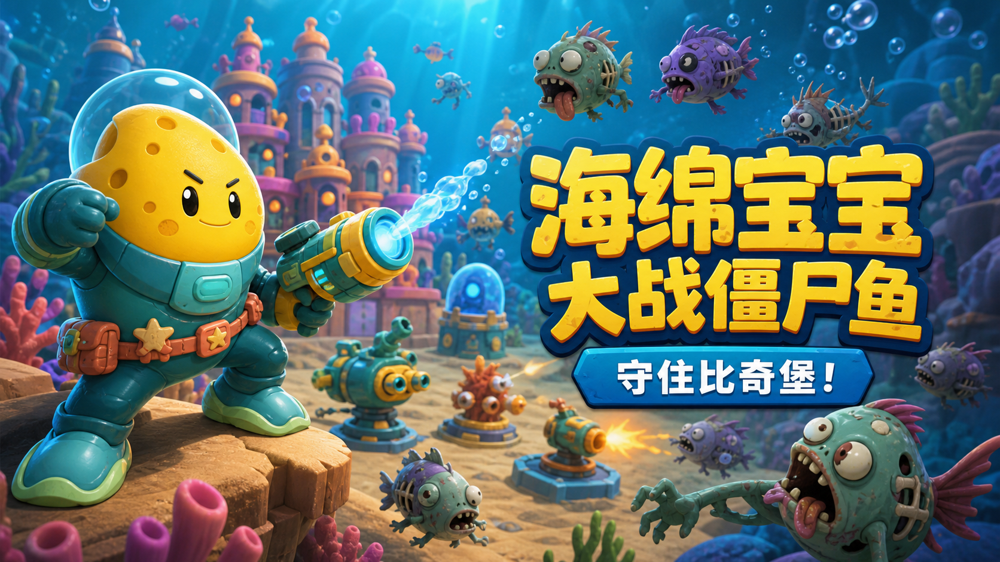

个人网站升级
重新整理了博客、日志、项目与关于页面，并开放独立游戏下载。
WRITING
JOURNAL
重新整理了博客、日志、项目与关于页面，并开放独立游戏下载。
《海绵宝宝大战僵尸鱼》Windows 版本完成，支持在线试玩与本地下载。
PROJECTS

一款轻松有趣的同人小游戏。操控角色抵御不断出现的僵尸鱼，在熟悉的海底世界中挑战更高分数。
SHA-256：ED7FD173E4AF…AB2C488
产品来源于抖音
来自指定目录的原版 Windows 游戏程序，已单独打包供下载，不与本站原有游戏混淆。
SHA-256：4A0CB90E10ED…53EE5B3E
ABOUT
这里是我的数字花园。我会记录正在学习的知识、生活中的小事，以及从想法到成品的创作过程。希望这些内容和作品也能给你一点灵感。